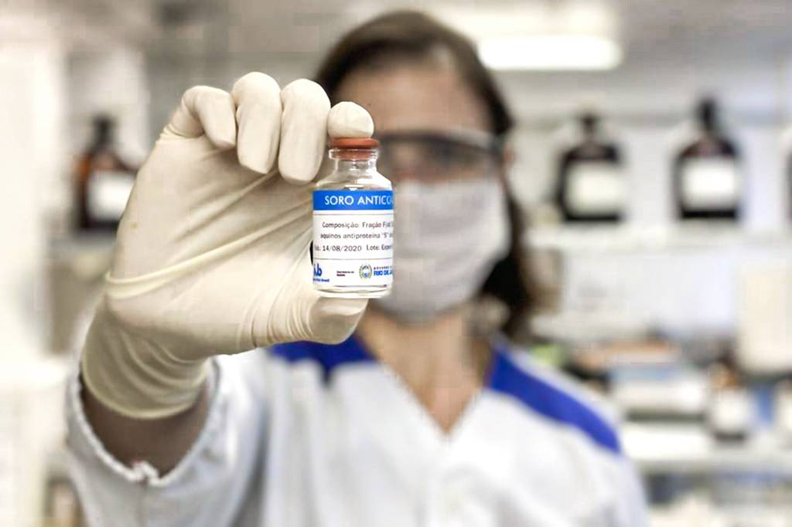
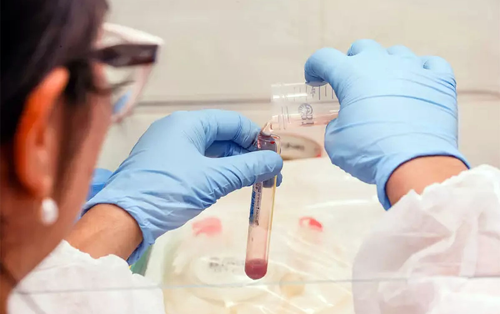
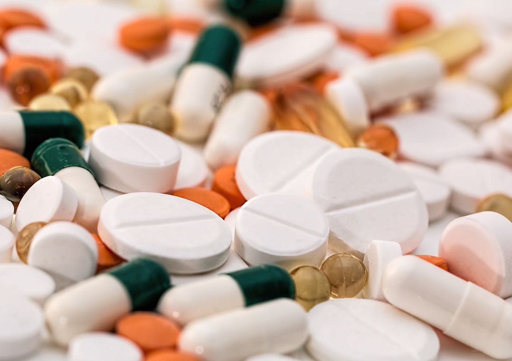

4 boas notícias sobre novos tratamentos em testes contra a covid-19
Desde o início da pandemia de coronavírus, já foram registrados no planeta nada menos do que 2,7 mil ensaios clínicos de tratamentos experimentais contra a covid-19. São testes envolvendo humanos.
É o que mostram dados de uma plataforma internacional International Clinical Trials Registry Platform, que reúne cadastros de estudos desse tipo prestes a serem iniciados. Até o momento, cerca de 1,6 mil ensaios estão ativamente recrutando voluntários ou já completaram esta etapa de experimentos, seja com remédios, alguns tipos de vacinas e até terapias alternativas.
Os ensaios clínicos são exigidos por agências sanitárias para comprovação da segurança e eficácia de um tratamento, e seu posterior registro e comercialização.
Na América Latina, o Brasil é o país com mais ensaios clínicos relativos à covid-19 planejados ou em execução em seu território: 159.
No mundo, quem lidera são os Estados Unidos, com 532.
Diante dessas milhares de apostas, apresentamos quatro tratamentos experimentais contra a covid-19 que apresentaram avanços no último mês, no Brasil e no mundo.
- Butanvac: O que se sabe sobre vacina
- Chefes de UTIs ligam ‘kit Covid’ a maior risco de morte no Brasil
- Como Londres conseguiu zerar as mortes por covid-19
1. Soro desenvolvido no Brasil
A Agência Nacional de Vigilância Sanitária (Anvisa) deu sinal verde, na última quarta-feira (24/3), ao início de testes clínicos com um soro desenvolvido pelo instituto Butantan, vinculado ao governo estadual de São Paulo.
O soro, um líquido injetável rico em anticorpos contra o coronavírus, é destinado a pessoas já infectadas e busca frear o agravamento da doença, impedindo por exemplo que ela ataque o pulmão.
Os testes com cobaias tiveram resultados "extremamente" efetivos, segundo o Butantan.
Ainda não há data determinada para início, mas os testes com pessoas devem começar em breve, segundo contou à BBC News Brasil Ana Marisa Chudzinski Tavassi, bioquímica e diretora do Centro de Desenvolvimento e Inovação do instituto.
Também está sendo definido o número de voluntários, mas pela natureza do tratamento, a abrangência menor do que em testes com vacinas. Elas são planejadas para serem aplicadas na população geral e têm função preventiva - diferente de tratarem alguém já infectado, como faz o soro.
O Butantan é responsável pela produção e fornecimento de outros soros para todo o país, como contra a raiva e venenos de cobras. No tratamento desenvolvido contra a nova doença, o coronavírus foi isolado de um paciente, multiplicado, inativado (para não desencadear uma infecção) e aplicado em cavalos em uma dose segura para não adoecerem.
Os animais funcionam como "fábricas" de anticorpos, produzidos em contato com o vírus e depois retirados para compor o soro aplicável em humanos.
"México, Costa Rica, entre outros países, produziram soros. A Argentina já tem um soro com uso autorizado para pacientes de modo geral e com resultados muito bons", aponta Chudzinski.
"Estes soros foram feitos para (atacar) um pedaço da proteína spike do vírus. A nossa diferença é que trabalhamos com o vírus inteiro. Isso pode ser uma vantagem em relação a variantes que estão por aí, porque as grandes variações estão acontecendo justamente na proteína spike."
Spike é como se chama a proteína que se encaixa nas células humanas para promover a infecção pelo coronavírus.
Exclusivo: 80% dos intubados por covid-19 morreram no Brasil em 2020
Covid-19: como evitar mortes em família e o drama do contágio dentro de casa
"Já trabalhamos in vitro com as variantes P.1 e P.2. Também vimos, nos testes com cobaias, uma clara redução da carga viral e a preservação do pulmão um dia depois do tratamento", diz a diretora do Butantan, acrescentando que ainda não há estudo publicado com os resultados.
Os ensaios clínicos vão verificar, na fase 1, se o soro é seguro para uso; na fase 2, qual seria a dosagem ideal; e na fase 3, se ele é eficaz em um grande número de pessoas.
2. Antiviral inicia testes
Outro tratamento em estudo que avançou para a primeira fase dos testes clínicos foi um remédio de uso oral que está sendo desenvolvido pela farmacêutica Pfizer. A empresa anunciou no dia 23 que os experimentos com pacientes foram iniciados nos Estados Unidos.
Segundo a empresa, o antiviral mostrou uma ação "potente" em testes in vitro no laboratório e é projetado para ser usado aos primeiros sintomas de covid-19.
O medicamento da Pfizer é do tipo inibidor de protease — uma enzima essencial para o vírus se multiplicar.
"A protease é crítica para o vírus se desenvolver, e os medicamentos direcionados a ela cortam alguns dos primeiros estágios da infecção — impedindo que o vírus se replique", explicou à BBC News na Inglaterra o virologista Stephen Griffin, da Universidade de Leeds.
Inibidores de protease já são usados contra os vírus HIV e da hepatite C. Inclusive, um desses medicamentos, o lopinavir-ritonavir, originalmente usado contra o HIV, foi incluído em um grande projeto da Organização Mundial da Saúde (OMS) para testar tratamentos considerados promissores pela entidade contra a covid-19.
Médicos relatam choque com UTIs lotadas de jovens: 'Temem perder olfato, mas perdem a vida'
Entretanto, alguns meses depois do início do projeto, chamado Solidarity, a OMS anunciou que interrompeu os estudos com o lopinavir-ritonavir uma vez que as pesquisas até ali mostraram que o tratamento tinha pouco ou nenhum efeito na redução da mortalidade de pessoas hospitalizadas.
Por ora, a primeira fase de ensaios clínicos anunciada pela Pfizer vai avaliar principalmente a segurança do medicamento, acompanhando eventuais efeitos adversos e alterações em exames.
3. Coquetel: metas atingidas na terceira fase
Já na fase 3, envolvendo mais de 4,5 mil participantes, os testes com um coquetel desenvolvido pela farmacêutica Roche tiveram bons resultados anunciados também no último dia 23.
O coquetel, uma combinação das substâncias casirivimab e imdevimab com aplicação intravenosa, configura um tipo de tratamento chamado de anticorpos monoclonais — quando anticorpos de uma pessoa que se recuperou da doença são selecionados e copiados em laboratório.
Os voluntários eram pessoas infectadas pelo coronavírus, não hospitalizadas, mas sob risco de agravamento da doença.
Empresário que produz Sputnik V no Brasil critica Anvisa e diz que Bolsonaro não nega ciência
De acordo com a companhia, o coquetel reduziu em 70% o risco de hospitalização e morte, na comparação com o placebo (um tratamento inócuo). Este era o principal objetivo a ser verificado pelo estudo.
Supostas vacinas e certificados de vacinação contra covid-19 são vendidos na dark web
Mas objetivos secundários também tiveram bons resultados, como a redução da duração dos sintomas de 14 para 10 dias. Os efeitos adversos se mostraram estatisticamente pouco signficantes, em 1% dos pacientes.
Há vários outros experimentos em curso com o casirivimab e imdevimab, incluindo no projeto Recovery, um conjunto de testes em larga escala no Reino Unidos com potenciais tratamentos para covid-19.
Em um comunicado, a Roche afirmou que irá compartilhar os resultados com agências sanitárias americanas e europeias, indicando sua intenção de ver o produto registrado e comercializado. A farmacêutica também pretende divulgar os dados em uma publicação científica.
4. Antiviral pode acelerar eliminação do vírus

No início de março, no dia 6, as farmacêuticas MSD e Ridgeback apresentaram resultados preliminares de um ensaio clínico em fase 2 com o antiviral oral molnupiravir, envolvendo 202 pessoas infectadas com o coronavírus nos Estados Unidos e não hospitalizadas.
Segundo comunicado, após o quinto dia de tratamento, a carga viral foi reduzida entre aqueles que receberam tratamento. Além disso, os efeitos adversos foram considerados irrelevantes e não relacionados ao medicamento. Detalhes e mais resultados da fase 2, incluindo os objetivos principais, serão divulgados em breve, de acordo com o consórcio.
Outros ensaios de fase 2 e 3 com o antiviral também estão sendo realizados.
O molnupiravir inibe a replicação de vírus de RNA como o SARS-CoV-2, e teve bons resultados em laboratório não só com este patógeno, mas com outros como o SARS-CoV-1 e MERS.